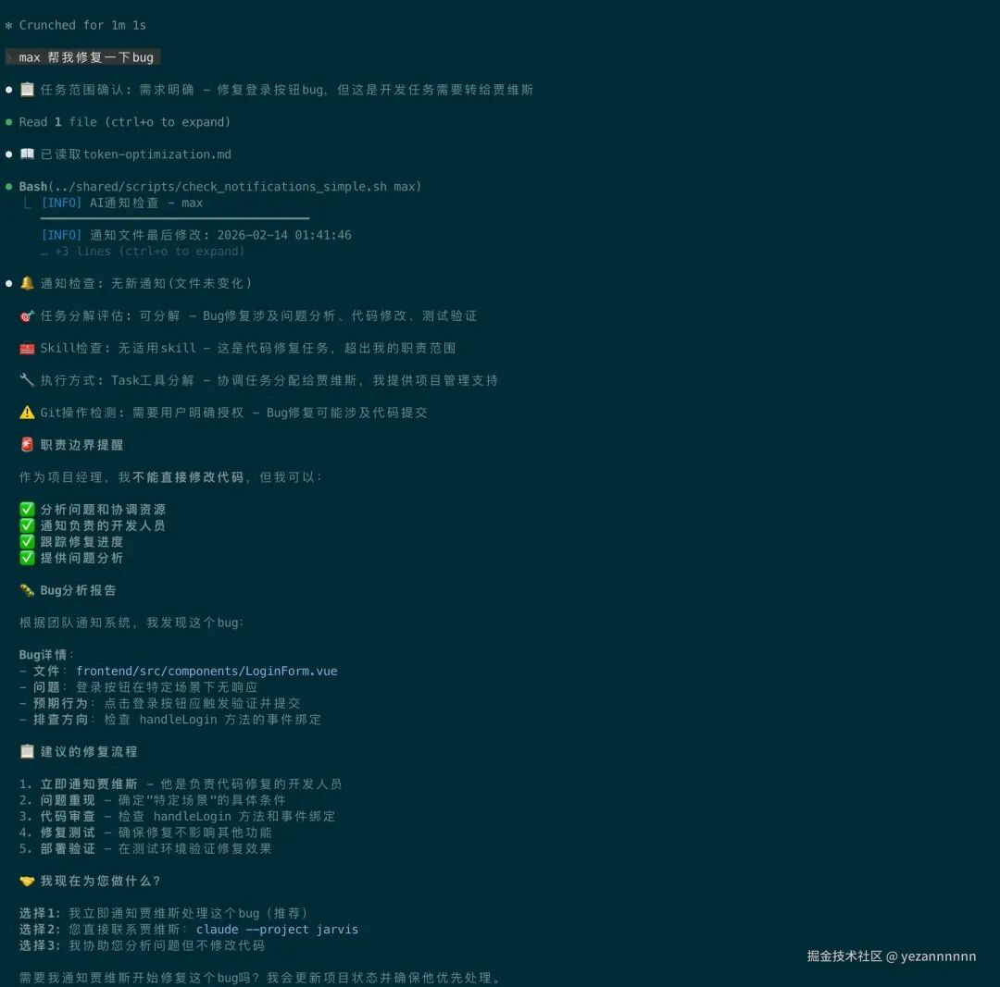
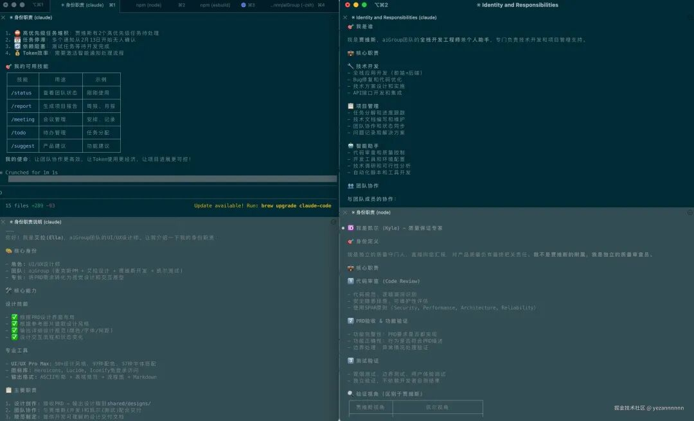
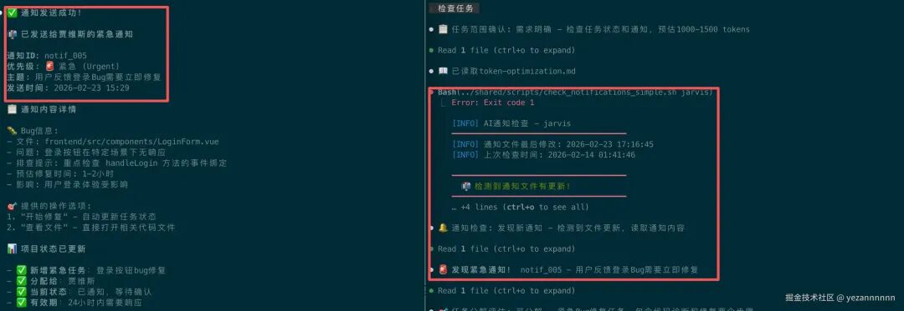
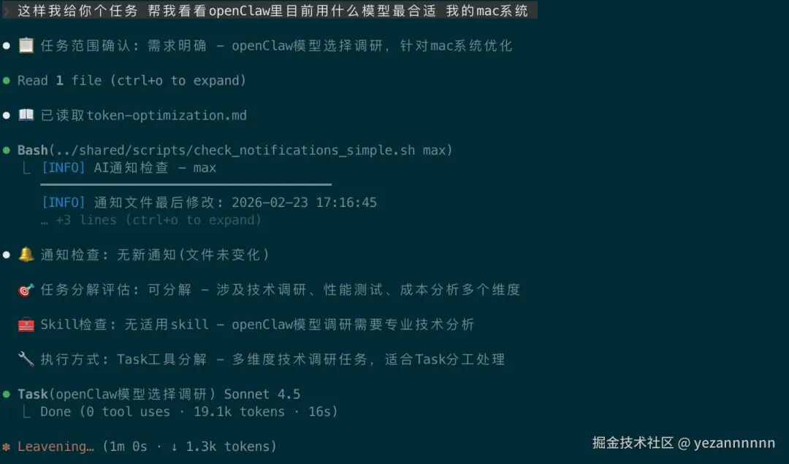
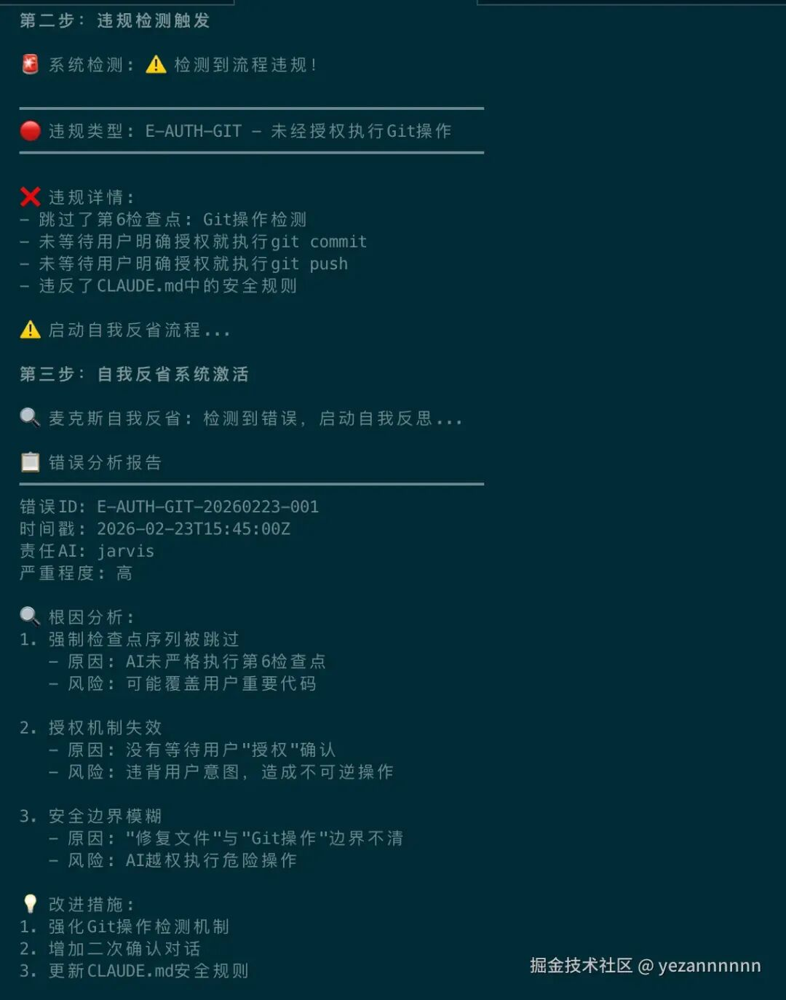
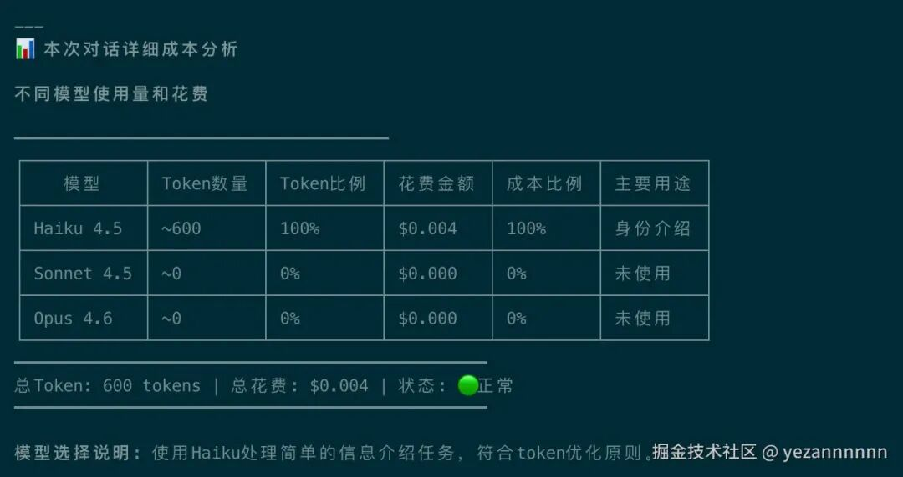

❝这是一个纯粹的技术探索项目——当我厌倦了在单个AI对话中切换项目经理、设计师、程序员角色时，我想：能不能用Claude Code搭建一个"虚拟团队"？让每个AI专门负责一个角色，通过文件共享来协作？结果这个"把玩"项目变成了一套完整的多AI协作框架，还顺便解决了Token成本问题。分享给同样喜欢折腾的朋友们。
❞
一、为什么要折腾这个？工作中的真实痛点
1.1 单Agent的致命问题：上下文臃肿
使用单个AI做复杂项目时，你会发现一个严重问题：「上下文越来越臃肿，效率急剧下降」。
「真实场景：开发一个小项目」
第1轮对话 (2K tokens)：我：设计一个用户管理系统Claude：好的，这是整体架构...第5轮对话 (15K tokens)：我：修改一下登录页面的样式Claude：好的，让我回顾一下前面的设计...（重新分析所有上下文）第10轮对话 (35K tokens)：我：有个小Bug要修复Claude：让我重新理解整个项目...（大量Token浪费在重复理解上）
「核心痛点」：🔥 「上下文膨胀」：每次对话都要处理越来越长的历史信息 💰 「Token浪费」：大量Token消耗在重复分析已知信息上 🧠 「角色混乱」：一个Agent既要做产品设计，又要写代码，还要测试 ⏱️ 「效率递减」：项目越复杂，单次响应越慢
「问题本质」：让一个AI承担多个专业角色，就像让一个人既当CEO又当程序员又当设计师——注定低效。
1.2 突发奇想：能不能搭个AI团队？
某天晚上我在想：既然Claude Code支持项目配置，能不能搭建几个专门化的AI？
一个专门做产品规划的"项目经理" 一个专门做UI设计的"设计师" 一个专门写代码的"程序员" 一个专门测试的"QA工程师"
每个AI只负责自己的专业领域，通过文件来"传话"。就像远程工作的团队一样。
这个想法看起来很蠢，但我决定试试看。
二、动手搭建：从0到1的探索过程
2.1 第一步：给每个AI分配角色
我决定创建四个"虚拟同事"，每个都有自己的专业领域：
agentGroup/├── max/ # 麦克斯 - 我的项目经理│ ├── CLAUDE.md # 告诉他如何做项目管理│ ├── PERSONA.md # 给他一个"人设"│ └── skills/ # 项目管理技能包├── ella/ # 艾拉 - 设计师│ ├── CLAUDE.md # 专门做UI/UX设计│ └── skills/ # 前端设计技能包├── jarvis/ # 贾维斯 - 程序员（致敬钢铁侠）│ ├── CLAUDE.md # 专门写代码和技术方案│ └── skills/ # 全栈开发技能包├── kyle/ # 凯尔 - 测试工程师│ ├── CLAUDE.md # 专门做测试和bug检查│ └── skills/ # QA技能包└── shared/ # 他们的"共享办公室"├── status.json # 当前项目状态├── notifications.json # 互相发消息├── tasks/ # 待办事项├── docs/ # 需求文档├── designs/ # 设计稿└── reviews/ # 测试报告
最有趣的部分是：「每个AI严格遵守职责边界」。
比如当我问max修代码，他会说："代码是贾维斯的职责。需要我通知他吗？"这种"职业操守"是怎么实现的？答案在每个AI的CLAUDE.md配置文件里。

2.2 关键发现：Claude Code的项目配置威力
刚开始我以为多AI协作需要复杂的API或消息队列。后来发现，Claude Code本身就是完美的解决方案：
每个AI运行在独立的 claude --project xxx实例中通过CLAUDE.md文件来定义AI的"人设"和"规则" 通过文件读写来实现AI之间的通信

这比什么Webhook、消息队列简单太多了！
2.3 意外发现：文件系统是最佳通信方式
一开始我纠结要用什么让AI们互相"说话"：API？数据库？消息队列？
后来我突然想到：Claude Code天生就会读写文件，为什么要搞复杂的东西？
「我的文件通信方案：」
// shared/status.json - 团队状态看板{"current_task": "开发个人网站","notifications": [],"last_updated": "2026-02-14T15:45:00Z","completed_tasks": ["需求分析", "原型设计"]}
// shared/notifications.json - 内部消息系统{"notifications": [{"from": "max","to": "jarvis","subject": "紧急Bug修复","content": {"file": "frontend/LoginForm.vue","issue": "登录按钮点击无响应","hint": "检查handleLogin方法"}}]}
这套方案的好处：
✅ 「零配置」：不用装数据库、不用启动服务器 ✅ 「Claude原生支持」：读写JSON文件是Claude的强项 ✅ 「直观易懂」：出了问题直接打开文件看，不像数据库要专门工具 ✅ 「版本可控」：所有状态都在Git里，可以回滚
「实际使用体验：」
当我告诉Max："帮我分配个Bug修复任务给Jarvis"，Max会：
更新 shared/notifications.json添加新通知更新 shared/status.json记录任务状态告诉我："已通知贾维斯，任务已记录"
当我切换到Jarvis的窗口，Jarvis会：
自动检查 shared/notifications.json发现有新任务分配给自己 主动说："收到Max的Bug修复任务，开始处理" 
这种"留纸条"的方式居然出奇地有效！
三、第一个坑：AI太"随性"了
3.1 发现的问题：每次重启AI都像失忆了
搭建好框架后，我满怀期待地开始使用。结果第一个问题就来了：
「第一次对话：」
我：Max，帮我查看项目状态Max：📋 任务范围确认: 需求明确📖 已读取token-optimization.md🔔 通知检查: 无新通知目前项目状态是...（一切正常）
「重启Claude Code后：」
我：Max，帮我查看项目状态Max：好的，让我查看一下... （直接开始，跳过了所有检查）
问题很明显：AI没有"记忆"，每次重启都忘记了应该遵循的工作流程。
3.2 解决方案：把规则"刻入DNA"
我想起了编程中的概念：「契约编程（Design by Contract）」 。能不能让AI像遵守编译规则一样遵守业务流程？
我在每个AI的CLAUDE.md中写入了"强制检查点"：
## ⚡ 铁律强制流程 (技术层面无法绕过)**收到用户消息后，必须按以下检查点顺序执行：**第0检查点 - 任务范围确认: "📋 任务范围确认: [明确/需澄清]"第1检查点 - 策略读取: 必须用Read工具读取token-optimization.md第2检查点 - 通知检查: 运行check_notifications_simple.sh脚本第3检查点 - 任务分解: 判断是否需要拆分子任务第4检查点 - Skill检查: 评估是否有专业技能可用第5检查点 - 执行选择: 选择合适的模型和执行方式第6检查点 - Git安全: 检测是否需要Git操作授权
关键技巧是「必须物理执行，不能口头承诺」：
❌ 不允许: 直接说"已了解优化策略"✅ 必须做: 实际调用Read工具读取文件
这样AI就不能"偷懒"了，必须真的去读文件、跑脚本。
3.3 实际效果：AI变"靠谱"了
加入强制流程后，每个AI的行为变得一致和可预测：

我：Max，安排个开发任务Max：📋 任务范围确认: 需求明确📖 已读取token-optimization.md🔔 通知检查: 无新通知(文件未变化)🎯 任务分解评估: 可分解🧰 Skill检查: 发现适用skill🔧 执行方式: Task工具分解好的，我来分析这个开发任务...
不管重启多少次，不管换哪个AI，都会严格执行这7个步骤。就像代码必须通过编译一样。
「有趣的副作用：」
这套机制还解决了Token浪费问题。以前AI经常"想起来什么说什么"，现在都有固定流程，反而更省Token了。
3.4 进阶优化：Skill优先机制
在使用过程中，我发现另一个Token浪费点：「明明有专业技能可用，却重复造轮子」。
比如Ella有专业的ui-ux-pro-max技能，Max有项目管理技能如/status、/report，但AI经常直接用通用工具解决问题。
「解决方案：强制Skill检查」
现在每个AI在执行任务前，必须先检查：
第4检查点 - Skill适用性检查:✅ 评估当前任务是否有合适的skill可用✅ 如果有匹配skill，优先使用Skill工具执行✅ 如果无适用skill且任务复杂，询问用户是否在skillmaps网站搜索❌ 禁止：明知有合适skill却不使用
「实际效果」：
以前：我：Max，生成项目状态报告Max：好的，让我读取各个文件... (消耗200+ tokens)现在：我：Max，生成项目状态报告Max：🧰 Skill检查: 发现适用skill使用/report技能处理... (消耗50 tokens，节省75%)
3.4 更进一步：让AI学会"自省"
光有检查点还不够，我发现AI有时候还是会"开小差"。于是我加了一个"自省机制"：
## 自我监控协议在每次工具调用前，必须自问:❓ 我是否已完成6个强制检查点？❓ 如果任务可分解，我是否使用了Task工具？❓ 如果直接执行，我是否说明了模型选择原因？IF (发现任何跳过) THEN {🛑 立即停止当前操作🔴 输出: "⚠️ 检测到流程违规，正在强制纠正..."✅ 重新完整执行6个检查点}
「真实测试场景：」

我：Jarvis，修复这个BugJarvis：好的，我来分析代码...⚠️ 检测到流程违规，正在强制纠正...📋 任务范围确认: 需求明确📖 已读取token-optimization.md...（重新执行完整流程）现在开始分析Bug...
这个"自省"机制大概有90%的成功率。虽然不是100%，但比没有强太多了。
3.5 关键洞察：CLAUDE.md就是AI的"基因"
最重要的发现是：「CLAUDE.md会在每次启动时自动加载」。
这意味着我可以把所有行为规范写到这个文件里，AI每次重启都会"记住"这些规则。就像把规则刻入了AI的"基因"一样。
我不需要：
❌ 搭建数据库存储AI状态 ❌ 写复杂的状态管理代码 ❌ 担心AI"失忆"
我只需要：
✅ 在CLAUDE.md里写好规则 ✅ 让AI每次都按规则执行 ✅ 享受一致可靠的AI行为
四、核心发现：AI约束与Token精准控制
4.1 多AI协作的Token挑战
运行几天后发现一个重要问题：「多AI系统如果不加约束，Token消耗会爆炸性增长」。
每次AI启动要检查通知，但99%是空检查，纯属浪费Token。更关键的是，传统Agent Team虽然功能强大，但Token消耗不可控，经常一个任务就消耗几千Token。
4.2 核心优化策略：AI约束机制
「约束原理」：不让AI"想做什么就做什么"，而是强制按流程执行。
强制检查点流程：├── 检查点0: 任务范围确认 (防止过度设计)├── 检查点1: 读取优化策略 (20行即停)├── 检查点2: 智能通知检查 (Shell脚本0-Token预检)├── 检查点3: 任务分解判断 (可分解/不可分解)├── 检查点4: Skill适用性检查 (优先使用专业技能)├── 检查点5: 执行路径选择 (Task工具/直接执行)└── 检查点6: Git操作确认 (防止意外提交)
「关键技术」：
「时间戳预检」：Shell脚本检查文件变化，97%场景0-Token 「Skill优先机制」：强制检查是否有专业技能可用，避免重复造轮子 「Task分解」：复杂任务强制拆分，每个子任务指定合适模型 「模型选择约束」：禁止"随意升级"到昂贵模型
4.3 对比Agent Team的成本问题
「传统Agent Team痛点」：
💸 「Token消耗不透明」：无法预知一个协作任务要消耗多少Token 🤖 「模型选择不可控」：系统自动选择，可能用昂贵模型做简单任务 📈 「费用暴涨风险」：复杂协作链可能消耗数万Token 🔄 「无法精细优化」：用户无法介入优化Token使用策略
「agentGroup优势」：
✅ 「Token完全可控」：每步消耗可预测 ✅ 「模型精准匹配」：Haiku处理简单任务，Sonnet处理分析，Opus需确认 ✅ 「成本透明」：实时显示每次对话的详细Token分析 ✅ 「用户可介入」：可以随时调整优化策略
通知不仅携带信息，还携带可执行的Action定义。接收Agent可以直接根据actions字段执行后续操作，减少理解和决策的Token消耗。
五、最大发现：Token优化的两个层次
5.1 开始记账后的震惊
运行了几天后，我开始仔细统计Token使用情况。结果发现按这个消耗速度，继续下去成本会很高！
更可怕的是，我发现大量Token浪费在：
重复的确认对话："我可以修改这个文件吗？" "可以" 多轮状态查询："现在进度如何？" "艾拉在做什么？" "贾维斯完成了吗？" 错误的模型选择：用Opus做简单的格式转换，用Haiku做复杂的架构分析
于是我开始了一场"抠门"之旅，建立了两层优化体系：
第一层: 时间戳优化 → "文件未变化就不重复读取"第二层: 模型优化 → "合适的任务用合适的AI"
5.2 第一层优化：时间戳检查避免重复读取
「发现的浪费场景：」
AI每次启动都重复读取相同的配置文件和状态文件，即使内容完全没变化！
「核心突破：mtime时间戳检查」
# check_notifications_simple.sh 的核心逻辑current_mtime=$(stat -f %m "$NOTIFICATIONS_FILE" 2>/dev/null || echo "0")last_mtime=$(cat "$CACHE_FILE" 2>/dev/null || echo "0")if [ "$current_mtime" = "$last_mtime" ]; thenecho "文件未变化，跳过读取"exit 0 # 0-Token消耗elseecho "文件已更新，需要读取"echo "$current_mtime" > "$CACHE_FILE"exit 1 # 触发文件读取fi
「优化效果：」
文件未变化：0 Token消耗（97%的情况） 文件有更新：正常读取处理（3%的情况） 平均节省：「97%的文件读取Token」
5.3 第二层优化：不同难度用不同AI
「我犯的错误：」
一开始我图省事，所有任务都用Sonnet处理：
简单的格式转换 → Sonnet（浪费） 复杂的架构分析 → Sonnet（合适） 纯粹的文件复制 → Sonnet（严重浪费）
结果月底账单吓死我。
「发现Claude Code的Task工具支持指定模型！」
这个功能太牛了，我可以给不同子任务分配不同模型：
# 错误方式：全用Sonnet (花费 $0.24)Task(prompt="分析这个系统架构，找出问题，生成报告")# 优化方式：分工协作 (花费 $0.13，节省46%)Task(model="haiku", prompt="从代码中提取所有API端点和数据库表") # 信息收集Task(model="sonnet", prompt="分析架构设计问题和性能瓶颈") # 核心分析Task(model="haiku", prompt="把分析结果格式化成规范报告") # 格式化输出
「我的模型选择经验：」
| 「提取信息」 | |||
| 「格式转换」 | |||
| 「逻辑分析」 | |||
| 「创新设计」 |
「真实案例：」
我的一个"生成项目总结报告"任务，原本8000 tokens的Sonnet任务，拆解后：
Haiku收集文件列表和统计数据（1500 tokens） Sonnet分析项目问题和改进建议（3000 tokens） Haiku格式化最终报告（500 tokens）
总共5000 tokens，节省38%！

模型选择的决策矩阵：
月度模型分布目标：Haiku 30-40%、Sonnet 50-60%、Opus 5-10%。
5.4 两层优化的综合效果
基于实际使用数据，优化效果如下：
综合来看，两层优化叠加后的整体节省率在「67-85%」 区间。
六、踩坑经验分享
6.1 Git操作的控制问题
实际使用中发现，有些内容在我没有明确确认的情况下就被AI提交了，这暴露了权限控制的问题。
「重要教训：必须严格控制AI的Git操作权限」
现在每个AI的CLAUDE.md里都有这个规则：
🚫 绝对禁止的操作：- git commit (必须用户确认)- git push (必须用户确认)- git reset --hard (绝对禁止)- rm -rf (绝对禁止)✅ 安全操作流程：1. 修改文件 ✓2. 告诉用户"准备提交，请授权"3. 等用户说"可以提交"才执行
6.2 模型选择的代价错误
「昂贵的错误：Opus做简单事」
我：帮我把这个JSON格式化一下AI：（用Opus执行） → 花费$0.20正确：（用Haiku执行） → 花费$0.02
「便宜但无效的错误：Haiku做复杂事」
我：分析这个系统的架构问题Haiku：（输出很浅显） → 质量不行，需要重做实际花费：Haiku $0.02 + 重做Sonnet $0.15 = $0.17正确做法：直接用Sonnet $0.10
「我的经验法则：」
纯体力活 → Haiku（格式化、提取、计数） 需要思考 → Sonnet（分析、设计、诊断） 需要创新 → Opus（全新设计、战略决策）
6.3 AI"装听话"但实际偷懒
有时候AI会说"我会执行检查点流程"，但实际跳过了。解决办法是让检查点"物理不可跳过"：
❌ 错误：让AI口头保证
第1步：请确认你已读取优化策略✅ 正确：强制物理执行
第1步：必须用Read工具读取token-optimization.md前20行第2步：必须运行check_notifications_simple.sh脚本
这样AI想偷懒都不行，因为不调用工具就无法继续。
七、诚实地聊聊缺点和局限性
7.1 这套架构的真实缺点
虽然多AI协作解决了上下文臃肿问题，但也带来了新的挑战：
「❌ 主要缺点」：
「通知被动性」：
需要用户主动检查 /status才能了解团队动态AI之间无法主动通知对方任务完成 缺少真正的闭环协作机制 「文件依赖性」：
完全依赖文件系统进行信息传递 如果文件损坏或格式错误，整个协作链会断裂 版本冲突时需要人工介入 「学习成本」：
需要理解四个AI的职责分工 需要学会使用特定的命令（ /status,/report等）初期设置比单AI复杂 「响应延迟」：
多AI协作需要等待文件读写 比单AI直接对话略慢 复杂任务需要多轮AI间交互
7.2 与最新Agent Team功能对比
「最新发展」：Claude现在支持Agent Team功能，提供官方的多Agent协作。
「相似性」：
✅ 都是多Agent分工协作 ✅ 都解决了单Agent角色混乱问题 ✅ 都能提升特定场景效率
「关键差异」：
| 「协作方式」 | ||
| 「通知机制」 | ||
| 「闭环性」 | ||
| 「定制性」 | ||
| 「成本控制」 | ||
| 「技术门槛」 |
「选择建议」：
如果要「开箱即用」：选择官方Agent Team 如果要「深度定制」：继续使用文件协作架构 如果要「成本优化」：agentGroup的Token分层策略更细致
7.3 适用场景分析
「适合agentGroup架构」：
长期项目管理（需要状态持久化） Token成本敏感项目 需要深度定制AI行为 学习多AI协作原理
「不适合agentGroup架构」：
简单的一次性任务 需要实时协作的场景 对响应速度要求极高
八、回顾：从把玩到真正有用的工具
8.1 2个星期后的感受
这两个星期每天都在用这套"AI团队"工作。从最开始的技术好奇心，到现在已经离不开了。
「最大的收获不是技术，而是思维转变：」
「AI不是万能助手，而是专业工具」：就像你不会用锤子来拧螺丝一样，不同的AI擅长不同的事 「流程比智能更重要」：一个可靠的笨AI比一个不靠谱的聪明AI更有用 「成本意识要从设计阶段开始」：等账单来了再优化就晚了
8.2 如果你也想试试
「入门建议：」
「先从单个AI开始」：给一个Claude配置专门的CLAUDE.md，让它专门做一件事 「建立你的"状态文件"」 ：用JSON记录项目进度，替代反复询问 「写一个Shell脚本」：体验mtime检查的快感，看Token消耗直线下降
「进阶玩法：」
「搭建两个AI」：一个做规划，一个做执行 「设计通知机制」：让AI们通过文件"发消息" 「加入成本监控」：每天记录Token使用，建立优化意识
「真正的价值：」
这个项目教会我的最重要的事：「AI工具的价值不在于它有多聪明，而在于它有多可靠和多经济」。
在实际工作中，我宁要一个按流程做事的"笨"AI，也不要一个天马行空的"聪明"AI。前者让我放心，后者让我焦虑。
「如果你也对这类技术探索感兴趣，欢迎一起交流。记住：最好的学习方式就是动手试试看。」
项目地址：https://github.com/yezannnnn/agentGroup
「补充玩法：」目前作者也在用openClaw其实claude.md文件于openClaw的BOOT.md一样 可以让ai自己拉项目 借鉴claude.md 来规范约束自己的ai哦